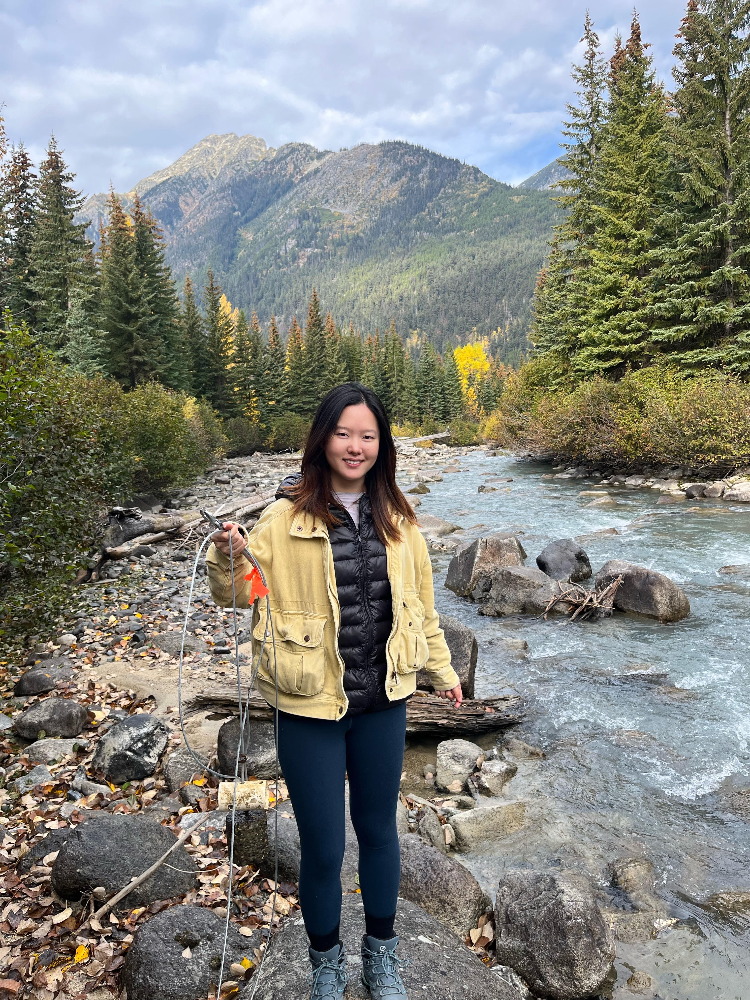

| Section | Time | Location |
|---|---|---|
| L1A | Tue & Thu, 15:00-17:00 | Room 115 |
| L2A | Wed & Fri, 10:00-12:00 | Hybrid Room 115 or Zoom |
Lab Sessions
Labs assignments build on the topics covered in lecture. They focus on GIS applications, giving you a chance to get hands on practice working with GIS software (ArcGIS Pro). Most labs have associated videos and/or readings. There is no textbook for the course, pdf files will be provided where applicable. You can work through the labs in your lab section but they may also require some extra time outside of scheduled lab hours.
- Labs will be formatted as open help sessions. They are your chance to get one-on-one help from your TA and you may also use them to work collaboratively with your classmates.
- Lab attendance is not mandatory, but it is strongly encouraged.
- There is course piazza page which you can use post/answer questions about the lab materials.
Your TAs

| Name | Zijie Chai |
| Pronouns | She/Her/Hers |
zijie01@mail.ubc.ca |
|
| Office | Room 225, Geography Bldg. |
My name is Zijie and I am a MSc student in Geography, studying the Contributions of glaciers to streamflow and how they have varied in response to climatic variability and glacier changes in Columbia River Basin. My background has mostly been focused on hydrology, a little on Hydrogeology and Biohydrology. In my free time I enjoy hiking, SUP, traveling, trying new food and watching movies!
| Name | Nastaran Pournematollahi |
| Pronouns | She/Her/Hers |
Nasipour@mail.ubc.ca |
|
| Office | Room 144, Geography Bldg. |
My name is Nastaran Nematolahi, and I am a second-year Ph.D. student in Geography. I am a physical geographer with a strong interest in river morphodynamics and environmental hydraulics. My research focuses on alluvial fans and the processes that operate on them. I also have a Master’s degree in Hydraulic Structures, which has given me a diverse background in the field. In my free time, I enjoy dancing and ice skating